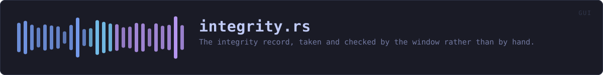

crates/veilvoice-gui/src/integrity.rs
veilvoice-gui · 386 lines · read the source here · or on GitHub
The integrity record, taken and checked by the window rather than by hand.
What this adds to veilvoice-guard
Nothing, cryptographically. Every hash, every comparison and every honest limit is veilvoice_guard's, and veilvoice_guard::SCOPE is what the interface prints. What this module adds is that it happens at all: the command-line veilvoice guard init has always been there and has always been a thing somebody had to know to run.
When it runs
At the first launch that finds no record, one is taken. At every launch after that, the record is checked. Both happen on a worker thread, because reading and hashing the installed files is disk work and the drawing thread does none.
Sealing, and the passphrase problem underneath it
A record written in the clear beside the files it describes is rewritten by anybody who can change those files. Sealing it under a passphrase raises that to needing the passphrase as well, which is a real improvement and is what veilvoice_guard::Manifest::seal is for.
The awkward part is which passphrase, and when. A record cannot be sealed by a program that has no secret, and at the moment a window opens it has none. So:
- With an app lock set, the record is sealed under the app-lock passphrase, and is taken and checked at the moment of unlocking, which is the one moment that passphrase exists. That is the arrangement worth having.
- With no app lock, the record is written in the clear and the interface says so, in those words. It still catches accidental corruption, a failed update and a careless overwrite. It does not catch somebody who thought to rewrite it, and pretending otherwise by sealing it under a key stored beside it would be a decoration, not a protection.
In plain words
VeilVoice writes down what its own files look like the first time it runs, and checks them every time after that.
If you have set an app lock, that record is locked with the same passphrase, so changing the files and the record needs your passphrase too. If you have not, the record is readable, and it will still spot a file that changed by accident but not one changed by somebody covering their tracks.
WHAT THIS FILE CONTAINS
386 lines defining 11 functions (6 public), 2 types and 0 constants. Everything below is read out of the source, so it cannot disagree with the code.
The types it owns.
enum Stateline 57 · What the record has to say, as far as this window knows.struct Integrityline 81 · The integrity record as the window drives it.
What happens when it runs. These are the ways in: public, and nothing else in this file calls them, so they are what an outside caller reaches first.
Integrity::stateline 97 · What the last completed check found.Integrity::is_busyline 102 · Whether a check is running, so the window keeps repainting while it is.Integrity::changedline 107 · Whether the record found a difference worth showing the user.Integrity::startline 120 · Take or check the record, off the drawing thread.
reachesrun,record_path,sealed_path,targets,write_privateIntegrity::pollline 142 · Collect a finished check.
WHAT CALLS WHAT
The functions this file defines, and the calls between them. An edge means the callee's name appears, called, inside the caller's body. This is a syntactic reading, not a type-resolved one.
The same graph as Mermaid source
%%{init: {"theme":"base","themeVariables":{"background":"#1a1b26","primaryColor":"#1f2335","primaryTextColor":"#c0caf5","primaryBorderColor":"#7aa2f7","secondaryColor":"#16161e","tertiaryColor":"#16161e","lineColor":"#737aa2","textColor":"#c0caf5","mainBkg":"#1f2335","nodeBorder":"#7aa2f7","clusterBkg":"#16161e","clusterBorder":"#2f3549","fontFamily":"ui-monospace, SFMono-Regular, Consolas, monospace","fontSize":"14px"}}}%%
flowchart TD
n_default["Integrity::default<br/>line 87"]
n_state(["Integrity::state<br/>line 97"])
n_is_busy(["Integrity::is_busy<br/>line 102"])
n_changed(["Integrity::changed<br/>line 107"])
n_start(["Integrity::start<br/>line 120"])
n_poll(["Integrity::poll<br/>line 142"])
n_record_path["record_path<br/>line 166"]
n_sealed_path["sealed_path<br/>line 171"]
n_targets["targets<br/>line 181"]
n_run["run<br/>line 190"]
n_write_private["write_private<br/>line 283"]
n_run --> n_record_path
n_run --> n_sealed_path
n_run --> n_targets
n_run --> n_write_private
n_start --> n_run
click n_default href "https://github.com/tilas01/veilvoice/blob/main/crates/veilvoice-gui/src/integrity.rs#L87" "open the source"
click n_state href "https://github.com/tilas01/veilvoice/blob/main/crates/veilvoice-gui/src/integrity.rs#L97" "open the source"
click n_is_busy href "https://github.com/tilas01/veilvoice/blob/main/crates/veilvoice-gui/src/integrity.rs#L102" "open the source"
click n_changed href "https://github.com/tilas01/veilvoice/blob/main/crates/veilvoice-gui/src/integrity.rs#L107" "open the source"
click n_start href "https://github.com/tilas01/veilvoice/blob/main/crates/veilvoice-gui/src/integrity.rs#L120" "open the source"
click n_poll href "https://github.com/tilas01/veilvoice/blob/main/crates/veilvoice-gui/src/integrity.rs#L142" "open the source"
click n_record_path href "https://github.com/tilas01/veilvoice/blob/main/crates/veilvoice-gui/src/integrity.rs#L166" "open the source"
click n_sealed_path href "https://github.com/tilas01/veilvoice/blob/main/crates/veilvoice-gui/src/integrity.rs#L171" "open the source"
click n_targets href "https://github.com/tilas01/veilvoice/blob/main/crates/veilvoice-gui/src/integrity.rs#L181" "open the source"
click n_run href "https://github.com/tilas01/veilvoice/blob/main/crates/veilvoice-gui/src/integrity.rs#L190" "open the source"
click n_write_private href "https://github.com/tilas01/veilvoice/blob/main/crates/veilvoice-gui/src/integrity.rs#L283" "open the source"
classDef entry fill:#1f2335,stroke:#7aa2f7,color:#c0caf5
class n_state,n_is_busy,n_changed,n_start,n_poll entry
classDef api fill:#1f2335,stroke:#7dcfff,color:#c0caf5
class n_record_path api
classDef helper fill:#1f2335,stroke:#bb9af7,color:#c0caf5
class n_default,n_sealed_path,n_targets,n_run,n_write_private helperThis site loads no third-party script, so it cannot run Mermaid; the diagram above is the same nodes and edges drawn by the generator instead. GitHub renders the source below directly.
ITEMS
| Item | Line | Documentation |
|---|---|---|
State pub enum | 57 | What the record has to say, as far as this window knows. |
Integrity pub struct | 81 | The integrity record as the window drives it. |
Integrity::default fn | 87 | |
Integrity::state pub fn | 97 | What the last completed check found. |
Integrity::is_busy pub fn | 102 | Whether a check is running, so the window keeps repainting while it is. |
Integrity::changed pub fn | 107 | Whether the record found a difference worth showing the user. |
Integrity::start pub fn | 120 | Take or check the record, off the drawing thread. |
Integrity::poll pub fn | 142 | Collect a finished check. |
record_path pub fn | 166 | Where the record is kept, beside the app lock and under the same rules. |
sealed_path fn | 171 | The sealed record sits beside the plain one under the container suffix. |
targets fn | 181 | The files worth watching: the running program, and nothing assumed. |
run fn | 190 | The whole of the work, on the worker thread. |
write_private fn | 283 |